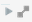

Fields are categorized into two basic roles: measures and dimensions. Measure fields are the quantitative data. Dimension fields are the categorical data. A field also has an associated data type, which describes the types of values the field contains (STRING, DATETIME, INTEGER, LONG, FIXED, or DOUBLE). Fields are grouped by the dataset they originate from. As you choose fields for your lens, you will notice that each field has an icon to denote what kind of field it is, and where it originates from.
| Icon | Field Role | Description |
|---|---|---|
| Measure |
Measure fields are quantitative data that have an aggregation applied, such as SUM or AVG. Measures always produce aggregated values in Platfora. Measure values are always a numeric data type (INTEGER, LONG, FIXED, or DOUBLE) and are always the result of an aggregation. Every aggregate lens must have at least one measure. The default measure is Total Records (a count of the records in the dataset). Measures are not applicable to event series lenses and funnel analysis visualizations. |
|
| Categorical Dimension |
Dimension fields are used to filter dataset records, group measure data (in an aggregate lens), or define set conditions (in an event series lens). Categorical dimension fields contain STRING type data. |
|
| Numeric Dimension | Dimension fields are used to filter dataset records, group measure data (in an aggregate lens), or define set conditions (in an event series lens). Numeric dimension fields contain INTEGER, LONG, FIXED, or DOUBLE type data. You can apply an aggregate function to a numeric dimension field to turn it into a measure. |
|
| Date Dimension |
Dimension fields are used to filter dataset records and group measure data. Date dimension fields contain DATETIME type data. Every datetime field also auto-creates a reference to Platfora's built-in Date and Time datasets. These date and time references allow you to analyze the time-based data at different granularities (week, day, hour, and so on). |
|
| Current Dataset Fields | Fields that are within the currently selected dataset are grouped together at the top of the lens field list. | |
|  | References |
A reference groups fields together that come from another dataset. A reference joins two datasets together on a common key. You can select dimension fields from any dataset, however you can only choose measure fields from the current dataset (if building an aggregate lens). |
| Events | An event is like a reference, except that the direction of the join is reversed. An event groups fields together that come from another dataset containing fact records that are associated with a point in time. Event fields are only applicable to event series lenses. |